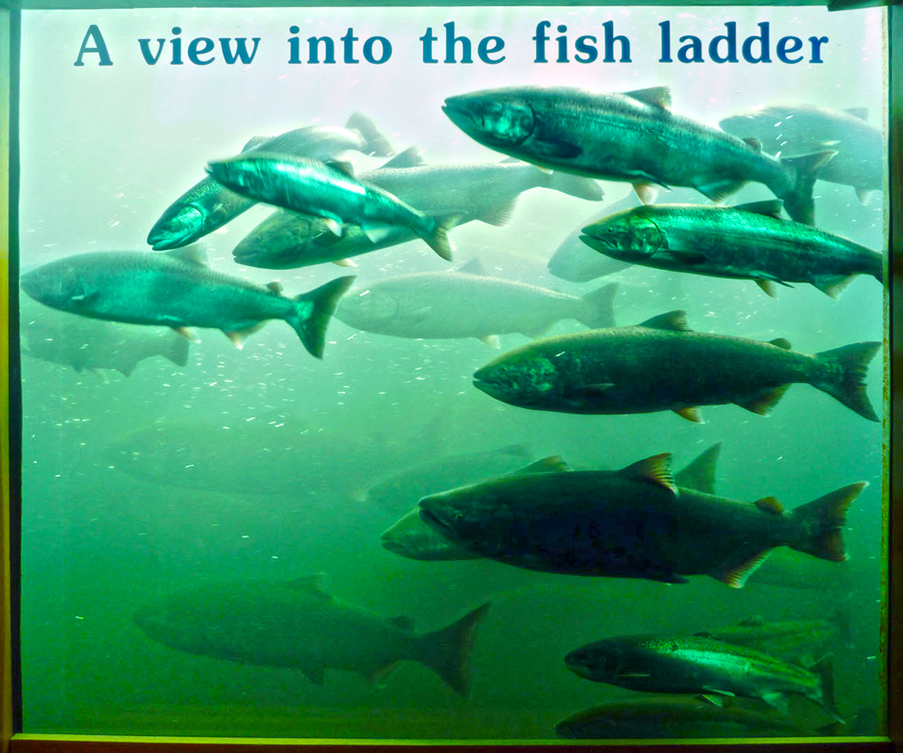
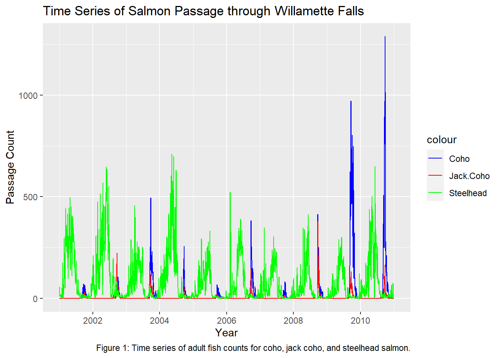
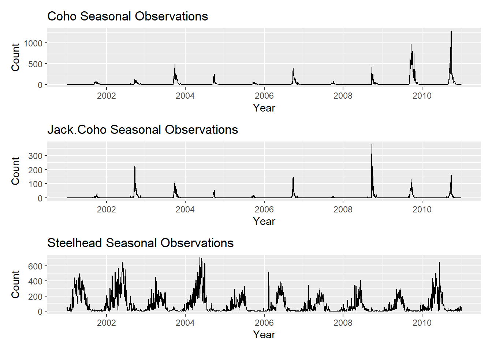
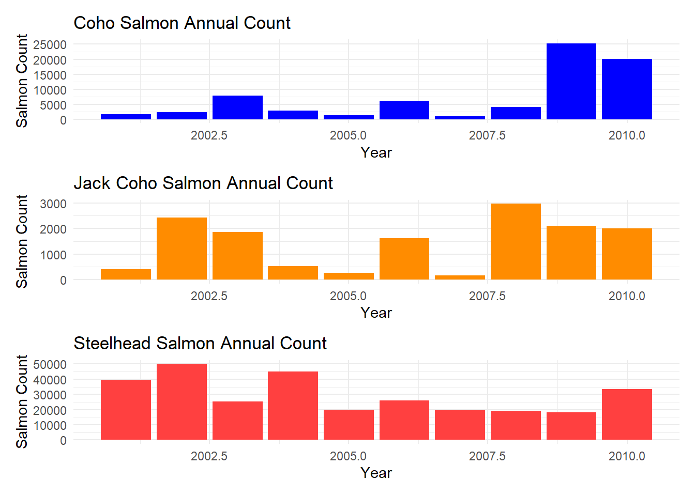

Code
library(tidyverse)
library(here)
library(tsibble)
library(feasts)
library(lubridate)
library(fable)
library(patchwork)library(tidyverse)
library(here)
library(tsibble)
library(feasts)
library(lubridate)
library(fable)
library(patchwork)raw_fish <- read.csv(here("data", "willamette_fish_passage.csv"))
This report analyses data recorded by the Columbia Basin Research team, of counts of adult fish passing through the Willamette Falls Fish Ladder in Oregon from 01-01-2001 to 12-31-2010. It separates counts by fish species, and makes note of the time and species of each fish observed.
This report focuses on Coho, Jack Coho, and Steelhead Salmon, and seeks to analyze trends for each species in a series of graphs: a time series analysis, a seasonplot, and an annual count graph.
raw_fish[is.na(raw_fish)] <- 0 #replaced NA values with 0
filtered_fish <- raw_fish %>%
dplyr::select(Date, Coho, Jack.Coho, Steelhead) %>%
mutate(Observed_Date = lubridate::mdy(Date)) %>%
as_tsibble(key = NULL)fish_graph_1 <- ggplot(filtered_fish, aes(x = Observed_Date)) +
geom_line(aes(y = Coho, color = "Coho")) +
geom_line(aes(y = Jack.Coho, color = "Jack.Coho")) +
geom_line(aes(y = Steelhead, color = "Steelhead")) +
labs(title = "Time Series of Salmon Passage through Willamette Falls",
x = "Year",
y = "Passage Count",
caption = "Figure 1: Time series of adult fish counts for coho, jack coho, and steelhead salmon.") +
scale_color_manual(values = c("Coho" = "blue", "Jack.Coho" = "red", "Steelhead" = "green"))
fish_graph_1
The most observed fish, on average, is the Steelhead.
Coho Salmon saw a spike in observations from 2010 onwards.
The least observed fish were the Jack Coho Salmon.
fish_graph_2_coho <- ggplot(filtered_fish, aes(x = Observed_Date, y = Coho)) +
geom_line() +
labs(
title = 'Coho Seasonal Observations',
x = 'Year',
y = 'Count'
)
fish_graph_2_jackcoho <- ggplot(filtered_fish, aes(x = Observed_Date, y = Jack.Coho)) +
geom_line() +
labs(
title = 'Jack.Coho Seasonal Observations',
x = 'Year',
y = 'Count'
)
fish_graph_2_steelhead <- ggplot(filtered_fish, aes(x = Observed_Date, y = Steelhead)) +
geom_line() +
labs(
title = 'Steelhead Seasonal Observations',
x = 'Year',
y = 'Count'
)combined_fishgraph_2 <- fish_graph_2_coho + fish_graph_2_jackcoho + fish_graph_2_steelhead + plot_layout(nrow = 3)
combined_fishgraph_2
The Coho graph shows a spike in observations of the fish species from just before 2010 and in the latter half of the year.
The Jack Coho graph reveals that the species of fish was most observed, from 2001 to 2011, in the years 2003 and 2009.
The Steelhead graph provides more evidence towards the above assumption that Steelhead are the most observed, consistently.
filtered_fish_yearonly <- filtered_fish %>%
mutate(date_only = year(Observed_Date))
filtered_fish_yearonly <- filtered_fish_yearonly[,-5]
coho_annual <- filtered_fish_yearonly %>%
dplyr::select(date_only, Coho) %>%
group_by(date_only) %>%
summarise(coho_total_annual = sum(Coho))
jackcoho_annual <- filtered_fish_yearonly %>%
dplyr::select(date_only, Jack.Coho) %>%
group_by(date_only) %>%
summarise(jackcoho_total_annual = sum(Jack.Coho))
steelhead_annual <- filtered_fish_yearonly %>%
dplyr::select(date_only, Steelhead) %>%
group_by(date_only) %>%
summarise(steelhead_total_annual = sum(Steelhead))fish_graph_3_coho <- ggplot(data = coho_annual, aes(x = date_only, y = coho_total_annual)) +
geom_col(fill = 'blue') +
labs(
title = 'Coho Salmon Annual Count',
x = 'Year',
y = 'Salmon Count',
cex.main = .25
) +
theme_minimal()
fish_graph_3_jackcoho <- ggplot(data = jackcoho_annual, aes(x = date_only, y = jackcoho_total_annual)) +
geom_col(fill = 'darkorange') +
labs(
title = 'Jack Coho Salmon Annual Count',
x = 'Year',
y = 'Salmon Count',
cex.main = .25
) +
theme_minimal()
fish_graph_3_steelhead <- ggplot(data = steelhead_annual, aes(x = date_only, y = steelhead_total_annual)) +
geom_col(fill = 'brown1') +
labs(
title = 'Steelhead Salmon Annual Count',
x = 'Year',
y = 'Salmon Count',
cex.main = .25
) +
theme_minimal()
combined_fishgraph_3 <- fish_graph_3_coho + fish_graph_3_jackcoho + fish_graph_3_steelhead + plot_layout(nrow = 3)
combined_fishgraph_3
Room for caption
DART Adult Passage Counts Graphics & Text. Columbia Basin Research. Retrieved January 25, 2024. Accessed February 1, 2024. https://www.cbr.washington.edu/dart/query/adult_graph_text